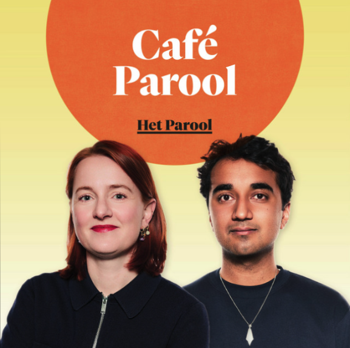

Café Parool is een podcast van Het Parool.
Voor Café Parool verzorg ik de productie, opnames en audiomontage. Ik zorg dat de gesprekken helder worden opgenomen en bereid het ruwe materiaal voor op de uiteindelijke aflevering.

Café Parool is een podcast van Het Parool.
Voor Café Parool verzorg ik de productie, opnames en audiomontage. Ik zorg dat de gesprekken helder worden opgenomen en bereid het ruwe materiaal voor op de uiteindelijke aflevering.
Luister